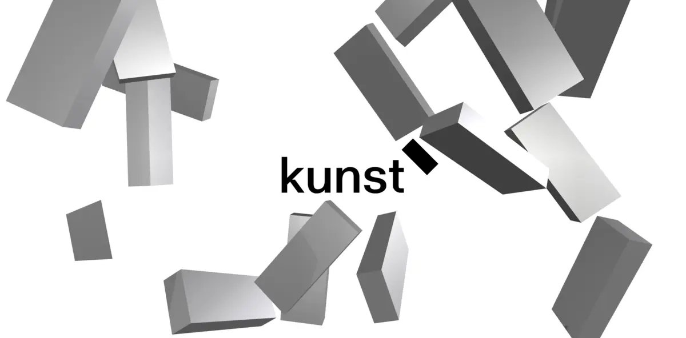
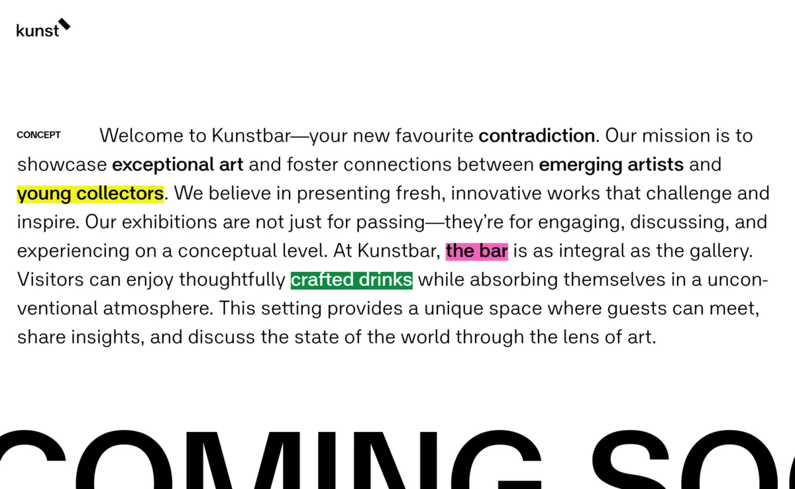
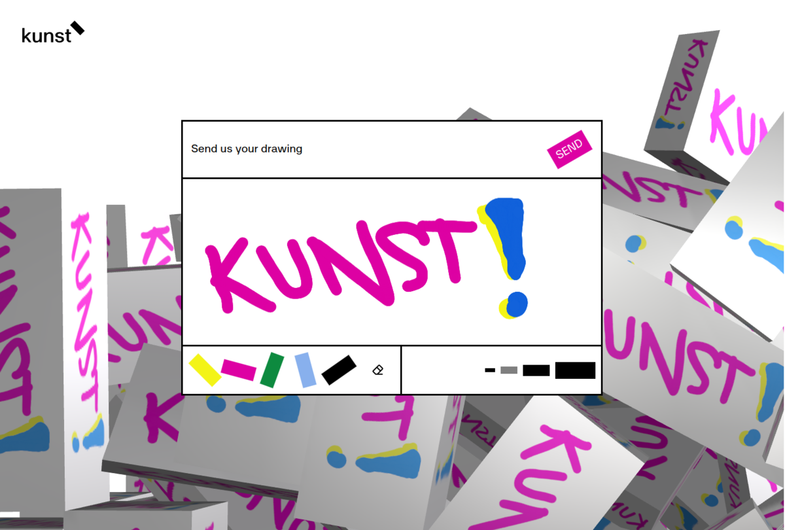
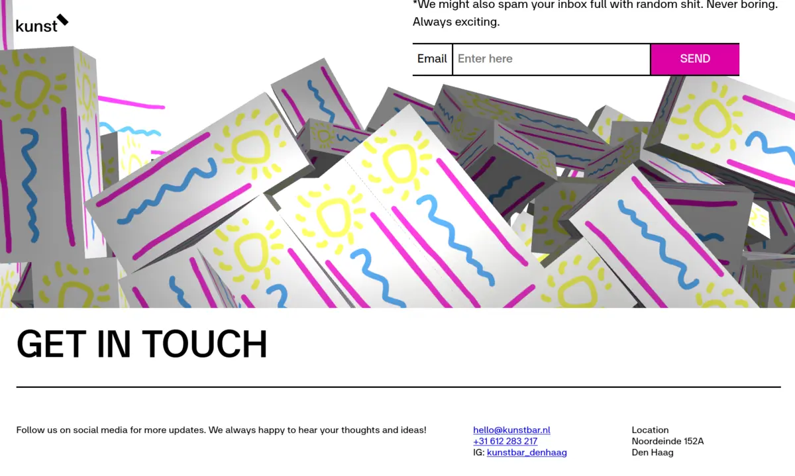

Kunstbar
I built the website for Kunstbar, a new art gallery/bar in The Hague. Kunstbar's mission is to create a space for emerging artists to show and sell their art. Working together with designer Jessica Kuhn, I developed an interactive 3D element using THREE.js and the Rapier physics engine. The sandboxed “bars” respond as the user navigates the site, bringing Kunstbar's playful and transgressive brand to life.
I used my Atrament library to let the user draw on the 3D bars in real-time. In this way, the website itself becomes a space for creativity. Users have the option to save and share their drawing with us. Just like the physical bar in the gallery, the 3D bars can also serve as an exhibition site in the future.
 